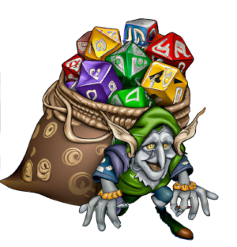
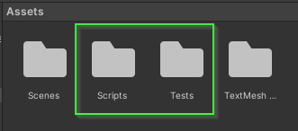
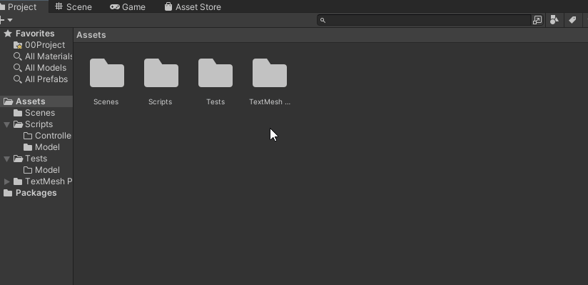
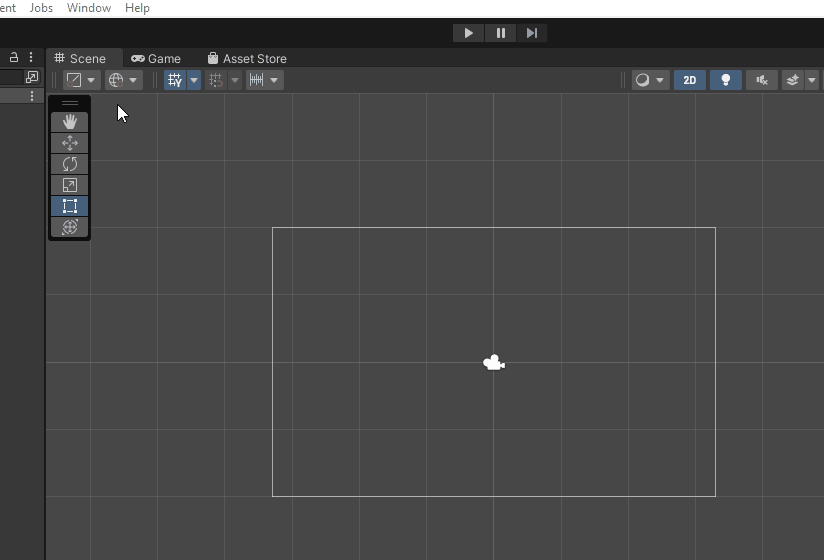
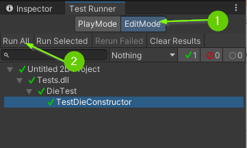
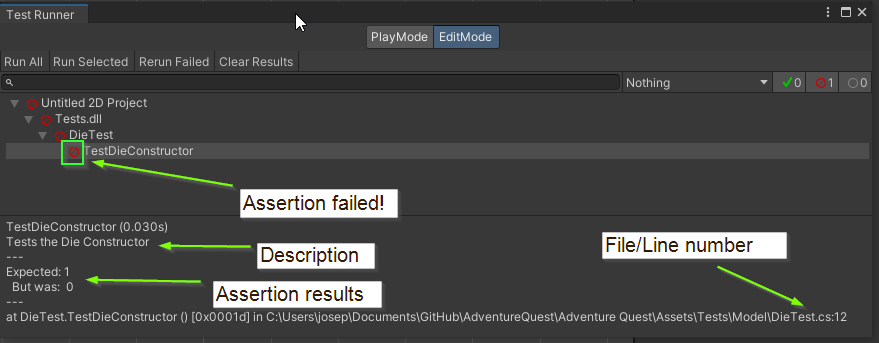
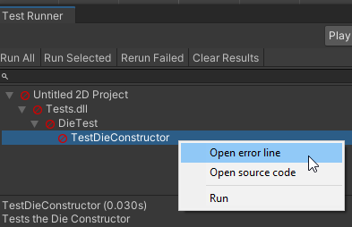
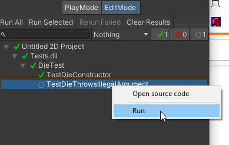
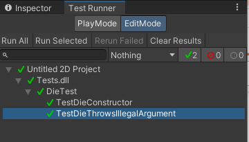

Chapter 1: Modeling a Die
Adventure Quest is an adventure game that will take inspiration from table top role playing games such as Dungeons & Dragons, Swords & Sorcery, and Fate Core. In these games, randomness is often accomplished by rolling one or more dice. Adventure Quest will model its randomness in the same way!
That said, we’re not talking about traditional 6 sided die. No, no, no! These games bring out giant sacks of dice with varying sizes and combinations.

To do this, we will first write a program that models an individual die.
Table of contents
Code Structure in Adventure Quest
As a programmer, it is our responsibility to manage the complexity of a program. It is far too easy to write a giant pile of spaghetti code in any language. But, when you’re working with something as powerful as Unity, it is even easier!
To help manage the complexity, the project template comes set up with 2 code folders: Scripts and Tests.

The Scripts folder will contain the code that runs when Adventure Quest is played while the Tests folder will contain code that helps give us confidence that each of our different components works the way we expect it to. This is particularly helpful because we can test parts of our program without running the game itself. These types of tests are called Unit Test (they test small “units” of code).
01. The Die Class
When programming, it is often useful to model real world objects as data. We can do this by creating a class. The word class is short for “classification” and allows us to manage complexity by composing data and methods which operate on that data together.
Before we begin, try to answer the following questions about a real physical die:
- What properties makes a die a die? What about it can be observed?
- What are the actions that I can take with a die?
These questions will help guide us think about how to write a class that models a die.
Create the Die Class
Let’s start by creating a Die class in the Scripts/Model folder.
- Open the
Scriptsfolder. - Open the
Modelfolder. - Right click in the
Modelfolder. - Select
Create>C# Script. - Rename the file
Die. - Double click to open the script.
By default, Unity will have added in default code for a MonoBehaviour. Start by replacing the entire contents with the code below:
using UnityEngine;
namespace AdventureQuest.Dice
{
public class Die
{
}
}
The first line of code tells the compiler that we want to use code available from the UnityEngine.
The next line says that we would like this code to be within a name space called AdventureQuest.Dice. A name space allows us to manage the complexity of a program and separate code that works together. Don’t worry about this too much right now, just know that this is a good habit and practice to have.
Within the name space we finally define a class called Die. In this case, we will be composing data together that is a “classification” for a Die.
Properties of a Die
Next, let’s define the properties of a Die.
Previously, you were asked to think about “What properties make a die a die? What about it can be observed?”
When I think about a die, there are two properties that come to mind:
- A die has a specific number of Sides
- A die has a specific number that was Last Rolled
These will be the two Properties of our die. But, what data type will store these values? Because these values happen to be discrete numbers, we will represent them as integers.
Finally, will either of the properties change?
- In the case of Sides, no. The number of sides on a Die never changes.
- In the case of LastRolled, yes. The number that is currently seen will need to change.
With all of this information, we can add these properties to our class:
- Update your code to have 2 properties: Sides and LastRolled
public class Die
{
/// <summary>
/// The number of sides on this <see cref="Die"/>. This value
/// is guaranteed to be greater than or equal to 2.
/// </summary>
public int Sides { get; }
/// <summary>
/// The value that was most recently rolled on this <see cref="Die"/>.
/// This value will be between 1 and <see cref="Die.Sides"/>.
/// If this <see cref="Die"/> has not been rolled, the value is 1.
/// </summary>
public int LastRolled { get; private set; }
}
Both Sides and LastRolled are public properties with a get. When we mark a property public it exposes that value so it can be accessed throughout the program. This is often called a getter (thus the word get).
However, Sides does not have a set (setter). This is because that value never changes. When you have a property that cannot be changed, we say that it is immutable. In general, making variables immutable is a good practice because it typically reduces complexity.
Additionally, LastRolled has a private set. When we mark a property private we do NOT expose it to the rest of the program. Instead, we enforce that the property may only be modified within the class it was defined. If a variable needs to change, it is a good practice reduce the number of ways the variable can be modified. This is often called the Principle of least privilege.
In this case, LastRolled has specific rules for how the value will be set. By marking it private we can guarantee that the value will not be modified outside of this class, thus reducing the complexity of the program.
Constructing a Die
Next, we need a way to create an instance of a Die. To do this, we will define a constructor that allows us to specify the number of Sides it has.
- Update your Die class to include a constructor that accepts an
intparameter.
public class Die
{
// Properties omitted for brevity
/// <summary>
/// Instantiates a <see cref="Die"/> specifying the number of <paramref
/// name="sides"/>. A <see cref="Die"/> must have at least 2 <paramref
/// name="sides"/>.
/// </summary>
/// <exception cref="System.ArgumentException">
/// Thrown if <paramref name="sides"/> is less than 2.
/// </exception>
public Die(int sides)
{
}
}
A constructor is a special method used by a class to specify the requirements to create an object of that type. In this case, a Die can only be created if we are able to specify the number of sides it will have. Because it doesn’t make sense to have a die with fewer than 2 sides (what would that even mean?) we add a comment which specifies that the sides parameter must not be less than 2.
In addition to specifying the requirements to create an object, the constructor also implements HOW the object is initialized. In this case, how should we initialize the properties?
Challenge: Write the Implementation for the Die constructor
Can you write the code that will correctly initialize a die?
- What should the initial value for
Sidesbe? - What should the initial value for
LastRolledbe?- Hint: What does the comment for
LastRolledsay?
- Hint: What does the comment for
02. The DieTest Class
In the past, you have probably tested your code by simply running it as a console program. In the case of Unity, it isn’t always easy to simply test a small portion of your code. To help manage this complexity, we will utilize Unity’s Test Framework to create Unit Tests.
The Template for Adventure Quest comes with a Tests folder that is configured to connect with your Scripts folder. This is where you will write all of your test code.
Create a DieTest Class
- Open the
Testsfolder - Open the
Tests/Modelfolder - Right click and select
Create>TestingC# Test Script - Rename the file
DieTest - Double click to open the file

The First Test
The main idea behind Unit Testing is to test small units of code. For our first test, let’s check that our constructor initializes a Die properly.
- Update your
DieTestfile to contain the following code:
using NUnit.Framework;
using System.Collections.Generic;
using AdventureQuest.Dice;
public class DieTest
{
[Test, Timeout(5000), Description("Tests the Die Constructor")]
public void TestDieConstructor()
{
Die d6 = new (6);
Assert.AreEqual(6, d6.Sides);
Assert.AreEqual(1, d6.LastRolled);
Die d4 = new (4);
Assert.AreEqual(4, d4.Sides);
Assert.AreEqual(1, d4.LastRolled);
}
}
The first three lines of code import the name spaces NUnit.Framework, System.Collections.Generic and AdventureQuest.Dice. The first is the framework that provides functionality for writing tests. The second contains functionality for creating lists. The third is the name space we put our Die class.
Next, we define the class DieTest which will contain all of the tests associated with the Die class.
Just below that, we define a method TestDieConstructor. This method has 3 attributes: Test, Timeout, and Description. The Test attribute tells the compiler that this method is a test and it should show up in Unity as such. The Timeout attribute sets a time limit for how long this test should run (in this case we specify 5000 milliseconds). The Description attribute allows us to add a comment to the test that will appear in Unity.
Finally, the body of the TestDieConstructor constructs two instances of the Die class: a d6 and a d4. It also asserts that those instances are initialized in the way we expect. In this case, we assert the number of Sides on each Die is initialized properly as well as LastRolled being initialized to 1.
Running the Test
So, you’ve added a test. How do you run it?
In Unity, you can access the Test Runner panel from the top menu:
- Select
Window>General>Test Runner.

You can attach the Test Runner anywhere you think works well for you. Let’s run the test!
- Click
Edit Modein theTest Runnerpanel. - Click
Run All. This will run all C# Test Scripts within theTestsfolder.
If all went well, you should see a series of green check marks.

If any of the assertions within a test fails, the test will fail and you will receive a red symbol. If you click on the failing test, you will see the tests description, the assertion that failed, and the file / line number where the assertion failed.

If this happens, you can right click on the failing test and select Open error line to bring you to that specific line of code in your code editor.

If your TestDieConstructor method is failing, you should do your best to fix it before moving on.
03. Ensuring a Die has at least 2 sides
You may have noticed the Sides property and Die constructor both mentioned that a Die is guaranteed to have at least 2 sides. By having this guarantee, it helps us (and our dev team) reason about how the object will work in reality. But, what is preventing someone from constructing a Die by passing in a negative number as an argument? If this happened, it could lead to some very strange and undefined behavior later in the game.
Another good practice / principle to follow in software development is to Fail-fast.
The general idea is: If your program reaches an unexpected state, you should fail (e.g. crash). This helps you identify bugs and problems within your code as early as possible.
One way to do this in C# is to throw an exception. An exception is a way to inform the program that it is in an “exceptional state” that it does not know what to do with. For example, if the program discovers that there is a Die with fewer than 2 sides, what should it do? It is undefined! Rather than allowing an undefined behavior (and potentially a hard to find bug), we can instead fail immediately and provide a good error message to help ourselves (or our dev-team) debug the issue.
In this case, let’s add in an error check within our Die constructor:
- Update your constructor to throw a
System.ArgumentExcepetionif the number ofSidesspecified is less than 2.
public Die(int sides)
{
if (sides < 2)
{
throw new System.ArgumentException($"A die must have at least 2 sides but found {sides}.");
}
Sides = sides;
LastRolled = 1;
}
This code allows you to manage the complexity of your program because you now know that the Sides property is guaranteed to be at least 2. Any bug related to Sides being less than 2 will be reported during construction of a Die.
The error message explains WHY the exception happens. This message is NOT designed for the user of the program but instead for someone working on the code (you or your dev-team). If the developer writes code that has a negative sides value, they will know immediately when the program attempts to construct the die what the variable sides contains.
Testing for Exceptions
Using exceptions is so useful that the test framework provides tools for testing that exceptions are thrown in specific situations! Let’s add in an exception test to give ourselves confidence that our program will throw an exception when sides is less than 2.
- Update your
DieTestclass to test for exceptions:
[Test, Timeout(5000), Description("Tests that a Die must be constructed with at least 2 sides")]
public void TestDieThrowsIllegalArgument()
{
Assert.Throws<System.ArgumentException>(() => new Die(1));
Assert.Throws<System.ArgumentException>(() => new Die(0));
Assert.Throws<System.ArgumentException>(() => new Die(-1));
Assert.Throws<System.ArgumentException>(() => new Die(-10));
Assert.Throws<System.ArgumentException>(() => new Die(-50));
}
For now, don’t worry too much about understanding EXACTLY what this code is doing. The important part here is to know that it is asserting that calling new Die(1), new Die(0), etc…, results in a System.ArgumentException being thrown.
Run the Test
Back in Unity, your Test Runner panel should now have the TestDieThrowsIllegalArgument test. If you would like, you can run all tests again. Alternatively, you can right click on an individual test to run it alone.

- Before continuing, run your test and ensure it is working

03. What does a Die do?
Next, let’s define what actions can be taken using a die.
Previously, you were asked to think about what actions can you take with a physical die.
When I think about a die, there is one main action that comes to mind:
- Rolling the die Roll()
This action will become a method that:
- Randomly selects a value between 1 and Sides
- Updates the LastRolled value
- Returns that value
To do this, we will utilize UnityEngine’s Random class. Since we have added using UnityEngine; at the top of our script, we can call the Random.Range(low, high) method to generate a number within a range. For example:
int randomInt = Random.Range(0, 3);
The code above generates a random number that can be 0, 1, or 2. It is important to understand that the second value will never be returned and is an exclusive upper bound.
- Update your
Dieclass to include a definition for aRollmethod that accepts no parameters and returns an integer.
/// <summary>
/// Rolls this <see cref="Die"/> setting the <see cref="Die.LastRolled"/>
/// parameter to be a value between 1 and <see cref="Die.Sides"/> inclusively.
/// For convenience, this method returns the rolled value.
/// </summary>
public int Roll()
{
return -1;
}
- Update your
DieTestclass to include a test rolling a six sided die:
[Test, Timeout(5000), Description("Tests rolling a 6 sided die 1,000 times.")]
public void TestSixSidedDie()
{
// Construct a 6 sided die
Die d6 = new(6);
// Before rolling, the die should have a 1 on its face
Assert.AreEqual(1, d6.LastRolled);
// A 6 sided die should have 6 sides
Assert.AreEqual(6, d6.Sides);
// Roll this die 1,000 times and make sure it is always a value
// between 1 and 6.
List<int> values = new();
for (int i = 0; i < 1_000; i++)
{
int result = d6.Roll();
Assert.AreEqual(result, d6.LastRolled);
Assert.LessOrEqual(result, 6);
Assert.GreaterOrEqual(result, 1);
values.Add(result);
}
// Check that each result was rolled
Assert.Contains(1, values);
Assert.Contains(2, values);
Assert.Contains(3, values);
Assert.Contains(4, values);
Assert.Contains(5, values);
Assert.Contains(6, values);
}
This test constructs a Die with 6 sides and rolls it 1,000 times. Each time it rolls it checks that the result of the roll matches the value of LastRolled and is also between 1 and 6.
Finally, after the 1,000 rolls, it checks that each value 1, 2, 3, 4, 5, and 6 were rolled at least once.
- Update your
DieTestclass to include a test rolling a twelve sided die:
[Test, Timeout(5000), Description("Tests rolling a 12 sided die 1,000 times.")]
public void Test12SidedDie()
{
// Construct a 12 sided die
Die d12 = new(12);
// Before rolling, the die should have a 1 on its face
Assert.AreEqual(1, d12.LastRolled);
// A 6 sided die should have 6 sides
Assert.AreEqual(12, d12.Sides);
// Roll this die 1,000 times and make sure it is always a value
// between 1 and 12.
List<int> values = new();
for (int i = 0; i < 1_000; i++)
{
int result = d12.Roll();
Assert.AreEqual(result, d12.LastRolled);
Assert.LessOrEqual(result, 12);
Assert.GreaterOrEqual(result, 1);
values.Add(result);
}
// Check that each result was rolled
Assert.Contains(1, values);
Assert.Contains(2, values);
Assert.Contains(3, values);
Assert.Contains(4, values);
Assert.Contains(5, values);
Assert.Contains(6, values);
Assert.Contains(7, values);
Assert.Contains(8, values);
Assert.Contains(9, values);
Assert.Contains(10, values);
Assert.Contains(11, values);
Assert.Contains(12, values);
}
This test works the same as the 6 sided die test but with a 12 sided die.
Challenge: Implement the Roll Method
With your method stub in place as well as a few unit tests to give you confidence that they are working, can you write an implementation to the Roll method?
Good Time to Commit
Now would be a good time to make a git commit. You just finished a feature. More specifically, you just implemented a Die class which models a fair die.
What’s Next?
With a model in place for a Die we are ready to create a Die Roller Scene! Once you have passed all of the tests, you should proceed to Chapter 2: Creating a Die Roller Scene
Join the Discussion
If you're stuck, have questions, or want to provide feedback, you can do so below. However, I ask that you please refrain from posting complete solutions to any of the challenges.
Before commenting, you will need to authorize giscus. Alternatively, you can add a comment directly on the GitHub Discussion Board.